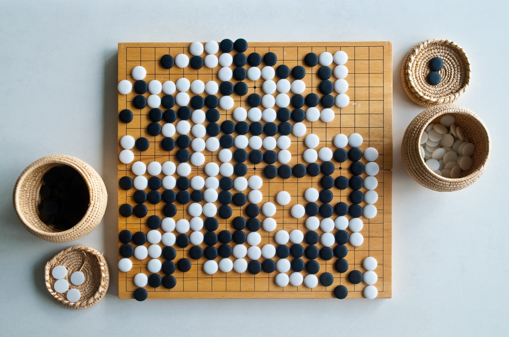
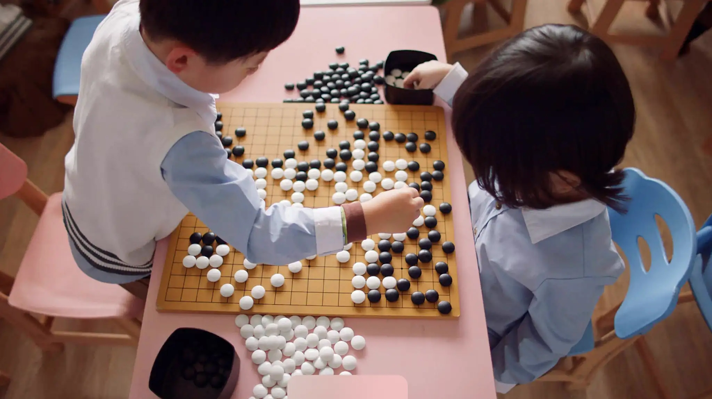

Go es un juego fascinante que requiere de una gran habilidad para anticiparse a los movimientos del oponente y planificar estrategias a largo plazo.
Introducción
El Go es un juego de mesa estratégico originario de China, también conocido como Weiqi o Baduk. Se juega en un tablero de 19x19 líneas con piezas llamadas "goishi" que son blancas y negras.
El objetivo del juego es conseguir el control de la mayor cantidad de territorio posible colocando piedras en el tablero y rodeando a las piedras del oponente. A diferencia de otros juegos de mesa como el ajedrez, en Go las piezas no se eliminan del tablero, lo que hace que el juego tenga una complejidad estratégica aún mayor.
El Go es un juego muy popular en Asia, especialmente en China, Corea y Japón, donde se considera una actividad cultural y se enseña en las escuelas. También ha ganado popularidad en otros lugares del mundo, y cuenta con torneos y asociaciones internacionales que promueven su práctica y desarrollo.
El Go es un juego fascinante que desafía la mente y la creatividad, y puede ser disfrutado tanto por jugadores casuales como por expertos. Su simplicidad en las reglas y complejidad en la estrategia lo hacen un juego muy interesante y único en su género.
Reglas
A continuación se presentan las reglas del juego:
- El Go se juega en un tablero de 19x19 líneas, aunque también existen tableros de 9x9 y 13x13 para partidas más cortas.
- El juego se juega con dos jugadores, uno con piedras blancas y otro con piedras negras.
- El objetivo del juego es controlar la mayor cantidad de territorio posible colocando piedras en el tablero y rodeando a las piedras del oponente.
- El juego comienza con el tablero vacío. Los jugadores colocan alternadamente una piedra en el tablero, comenzando con las piedras negras.
- Las piedras se colocan en los puntos de intersección del tablero, no en las líneas.
- Las piedras se pueden colocar en cualquier punto del tablero que esté vacío, excepto en aquellos puntos donde la piedra sería capturada inmediatamente.
- Una piedra es capturada y removida del tablero cuando es rodeada completamente por piedras del oponente. Las piedras capturadas no se pueden volver a utilizar.
- Las piedras pueden ser conectadas entre sí para formar grupos más grandes, lo que los hace más difíciles de capturar.
- El juego termina cuando ambos jugadores pasan en turnos consecutivos, o cuando se llenan todas las intersecciones del tablero.
- Al final del juego, se cuentan los puntos de territorio controlados por cada jugador, incluyendo las piedras capturadas del oponente. El jugador con más puntos es el ganador.
Es importante mencionar que las reglas del Go pueden variar ligeramente dependiendo de la región o del nivel de competición. Además, el juego tiene numerosas estrategias y tácticas que los jugadores deben conocer para jugar de manera efectiva.
Curiosidades
- El Go es considerado uno de los juegos de mesa más antiguos del mundo, con una historia que se remonta a más de 2,500 años en China.
- A diferencia de otros juegos de mesa, como el ajedrez, el Go no tiene un conjunto de movimientos predefinidos o una estrategia fija. En su lugar, cada juego es único y requiere una nueva estrategia para ganar.
- El Go ha sido utilizado por los investigadores de inteligencia artificial como un desafío para sus algoritmos. El juego es tan complejo que incluso los programas más avanzados han tenido dificultades para derrotar a jugadores humanos expertos.
- El Go es muy popular en Asia, especialmente en Corea, China y Japón. En Japón, los jugadores profesionales de Go son considerados celebridades y aparecen en programas de televisión y revistas.
- Existe una leyenda en el mundo del Go que dice que si alguien es capaz de encontrar la estrategia perfecta para el juego, entonces habrá alcanzado la iluminación. Aunque esta afirmación es exagerada, demuestra la importancia y complejidad del juego.
- En 2016, el campeón mundial de Go, Lee Sedol, jugó contra el programa de inteligencia artificial de Google llamado AlphaGo, el cual ganó cuatro de los cinco partidos en un enfrentamiento histórico que demostró el potencial de la inteligencia artificial en el mundo del Go.
- El Go ha sido utilizado en la enseñanza y práctica de habilidades de liderazgo y toma de decisiones en empresas y organizaciones. Se cree que el juego fomenta la creatividad, la reflexión y la perseverancia, habilidades valiosas en cualquier ámbito profesional.

★ ★ ★ ★ ★
★ ★ ★ ★ ★
Aunque Go puede parecer simple a primera vista, su complejidad aumenta rápidamente a medida que se avanza en el juego.
★ ★ ★ ★ ★
Es una experiencia única que te permite desarrollar habilidades mentales como la concentración y el pensamiento abstracto.